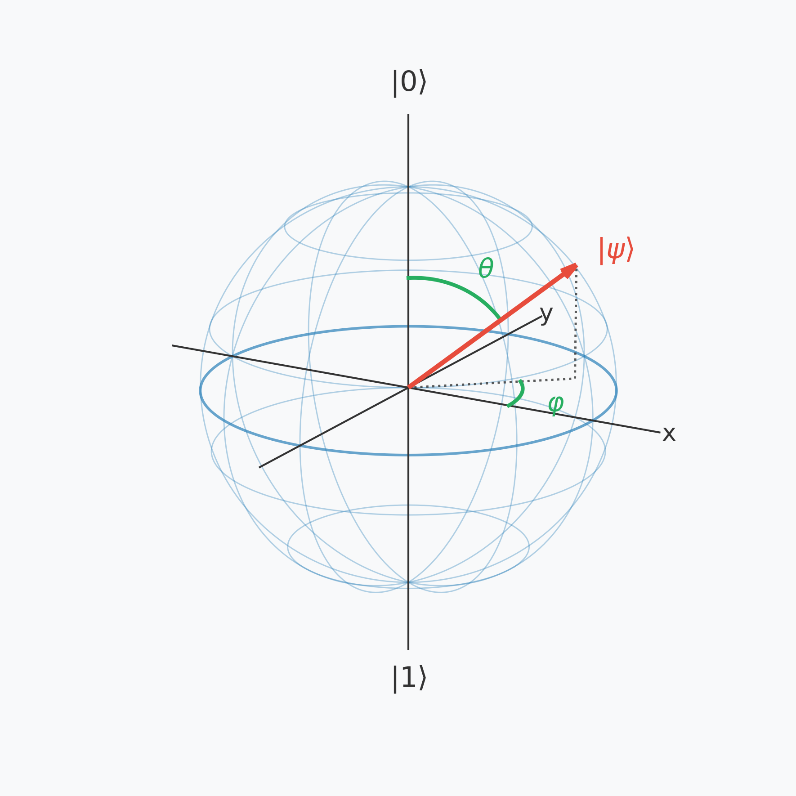

Capítulo 4 — Qubits e os Postulados da Computação Quântica¶
No Capítulo 3, construímos toda a linguagem matemática de que precisaríamos: números complexos, vetores, o produto interno, a notação de Dirac, matrizes unitárias e o produto tensorial. Em vários pontos daquele capítulo, prometemos voltar e usar essas ferramentas para dizer, com precisão, o que é um qubit e por que a mecânica quântica funciona da forma como funciona.
É exatamente isso que faremos agora. Vamos partir do bit clássico — para relembrar exatamente o que estamos generalizando —, depois enunciar os postulados da mecânica quântica (as regras fundamentais e não demonstráveis sobre as quais tudo o mais é construído), e só então definir o qubit formalmente. Terminaremos com duas ferramentas indispensáveis para visualizar e manipular qubits: a Esfera de Bloch e as portas quânticas.
Note
Se você sentir que já viu partes deste capítulo antes, é porque viu: o Capítulo 3 usou a porta \(X\), os estados \(|0\rangle,|1\rangle,|+\rangle,|-\rangle\) e a ideia de superposição como exemplos matemáticos. Aqui, esses mesmos objetos ganham finalmente seu significado físico completo.
4.1 Bits Clássicos¶
Antes de generalizar, vale a pena ser preciso sobre aquilo que estamos generalizando. Um bit clássico é a unidade fundamental de informação em um computador convencional. Ele pode assumir exatamente um de dois valores,
e, a qualquer instante, seu valor é perfeitamente definido: um bit nunca está “um pouco” em 0 e “um pouco” em 1. Fisicamente, um bit costuma ser representado por algo como um nível de voltagem (alto ou baixo), a orientação de um domínio magnético, ou a presença ou ausência de carga elétrica — mas a implementação física é irrelevante para a matemática. O que importa é que o espaço de estados possíveis de um bit tem exatamente dois pontos, e nenhum outro.
Espaço de estados de 1 bit clássico:
0 ●───────────────● 1
(apenas estes dois pontos são permitidos)
Quando combinamos vários bits, o número de estados possíveis cresce rapidamente. Com \(n\) bits clássicos, existem \(2^n\) configurações possíveis (000, 001, 010, …), mas — e este ponto será crucial na Seção 4.3 — a qualquer instante, o sistema está em exatamente uma dessas configurações. Descrever o estado de \(n\) bits clássicos exige apenas \(n\) valores binários, não \(2^n\) números.
Important
Guarde esse contraste: um sistema de \(n\) bits clássicos ocupa um único entre \(2^n\) estados possíveis, e descrevê-lo custa apenas \(n\) bits de informação. Veremos na Seção 4.3 que um sistema de \(n\) qubits, em contraste, pode existir em uma combinação de todos os \(2^n\) estados simultaneamente, e descrevê-lo completamente exige \(2^n\) números complexos — exatamente a contagem que já havíamos encontrado na Seção 5.5 do Capítulo 3.
Um computador clássico manipula bits através de portas lógicas — AND, OR, NOT, XOR, e assim por diante — cada uma delas uma função determinística que mapeia uma ou mais entradas binárias para uma saída binária. Na Seção 4.5 veremos que as portas quânticas desempenham um papel análogo, mas com uma diferença fundamental: elas são sempre reversíveis, uma consequência direta da unitariedade que já estudamos no Capítulo 3.
Exercícios¶
Quantos estados possíveis existem para um registrador de 5 bits clássicos?
Resolução
Quantos valores binários são necessários para especificar completamente o estado de um registrador de 5 bits clássicos, em um dado instante?
Resolução
Apenas 5 — um valor (0 ou 1) para cada bit, já que o registrador está em exatamente uma das 32 configurações possíveis a cada instante.
Verdadeiro ou falso: um bit clássico pode estar simultaneamente “um pouco em 0 e um pouco em 1”. Justifique.
Resolução
Falso. Por definição, um bit clássico assume exatamente um dos dois valores \(\{0,1\}\) a cada instante. A possibilidade de estar em uma combinação dos dois é uma característica exclusivamente quântica, que veremos a partir da Seção 4.3.
4.2 Os Postulados da Mecânica Quântica¶
Toda teoria física é construída sobre um pequeno conjunto de regras fundamentais, aceitas não porque são demonstradas matematicamente a partir de algo mais básico, mas porque suas consequências foram confirmadas repetidamente por experimentos. Essas regras são chamadas de postulados.
Vamos enunciar quatro postulados. Cada um deles usa diretamente uma ferramenta construída no Capítulo 3 — e é exatamente por isso que precisávamos daquele capítulo antes deste.
Note
Existem formulações mais gerais e completas dos postulados da mecânica quântica, cobrindo sistemas contínuos, mistura estatística de estados, e outros casos que este livro não trata em detalhe, já que nosso foco é o modelo de circuitos quânticos — sistemas de estado finito (qubits) manipulados por portas discretas. Para o tratamento axiomático completo, veja Nielsen & Chuang (2010) [1] ou Sakurai & Napolitano (2017) [4].
Postulado 1 — Estados¶
Important
Postulado 1 (Estados). A cada sistema físico isolado associa-se um espaço de Hilbert complexo (um espaço vetorial complexo equipado com um produto interno). O estado do sistema é representado por um vetor unitário (normalizado) \(|\psi\rangle\) desse espaço. Vetores que diferem apenas por uma fase global descrevem o mesmo estado físico.
O primeiro postulado estabelece como representamos matematicamente um sistema quântico. O termo espaço de Hilbert pode parecer novo, mas, no contexto deste livro, basta pensar nele como um espaço vetorial complexo no qual também podemos definir produto interno, norma e ortogonalidade — exatamente as ferramentas matemáticas desenvolvidas no Capítulo 3.
Assim, o estado de um sistema quântico é representado por um ket normalizado,
A condição de normalização não é apenas um detalhe matemático: ela garante que as probabilidades obtidas a partir do estado (Postulado 3, a seguir) somem exatamente a 1.
Neste livro trabalharemos apenas com sistemas de dimensão finita, isto é, registros formados por um número finito de qubits. Nesses casos, o espaço de Hilbert é simplesmente o espaço vetorial complexo \(\mathbb{C}^{2^n}\), onde \(n\) é o número de qubits do sistema.
Exemplo — O estado de um qubit
Considere um único qubit no estado
Escrevendo esse estado na forma vetorial,
A norma desse vetor é
Portanto, esse é um estado quântico válido, pois satisfaz a condição de normalização exigida pelo Postulado 1.
Postulado 2 — Evolução¶
Important
Postulado 2 (Evolução). A evolução de um sistema quântico isolado é descrita por uma transformação unitária. Se o estado inicial do sistema é \(|\psi\rangle\), então, após a evolução,
onde \(U\) é uma matriz unitária.
O segundo postulado descreve como um estado quântico muda ao longo do tempo. Enquanto o sistema permanece isolado — isto é, sem sofrer medições nem interagir com o ambiente — sua evolução é completamente determinada pela aplicação de uma matriz unitária ao vetor de estado.
A exigência de que \(U\) seja unitária não é arbitrária. Como vimos no Capítulo 3, matrizes unitárias preservam a norma dos vetores. Como os estados quânticos devem permanecer normalizados,
a evolução também deve preservar essa propriedade, garantindo que as probabilidades continuem somando exatamente a 1.
Na computação quântica, esse postulado tem uma consequência imediata: toda porta quântica é representada por uma matriz unitária. Assim, executar um circuito quântico consiste simplesmente em aplicar uma sequência de transformações unitárias ao estado do sistema.
Note
Em formulações mais gerais da mecânica quântica, a evolução é descrita pela equação de Schrödinger,
onde \(H\) é o Hamiltoniano do sistema, que representa sua energia total, e \(\hbar = h/(2\pi)\) é a constante de Planck reduzida.
Para um Hamiltoniano independente do tempo, a solução dessa equação diferencial pode ser escrita explicitamente através do operador de evolução temporal
de modo que o estado no instante \(t\) é dado por \(\vert{}\psi(t)\rangle = U(t)\vert{}\psi(0)\rangle\). Como \(H\) é um operador hermitiano (\(H = H^\dagger\)), sua exponencial complexa garante que \(U(t)\) seja uma matriz unitária.
Neste livro adotaremos o modelo de circuitos quânticos, no qual a evolução é tratada como uma sequência discreta de portas quânticas. Por isso, utilizaremos quase sempre a forma simplificada
que captura exatamente a mesma ideia sem introduzir explicitamente a dependência temporal.
Exemplo — A porta Hadamard
Considere o operador
Primeiro, verifiquemos que ele é unitário. Como todos os elementos da matriz são reais,
Assim,
Portanto, \(U\) é uma matriz unitária.
Agora vejamos como ela atua sobre os estados da base computacional.
Aplicando \(U\) ao estado \(|0\rangle\),
Da mesma forma,
Observe que os estados continuam normalizados, exatamente como afirma o Postulado 2.
O operador \(U\) é conhecido como porta Hadamard e costuma ser representado pela letra
Ela é uma das portas quânticas mais importantes da computação quântica e será utilizada repetidamente ao longo deste livro.
Postulado 3 — Medição¶
Important
Postulado 3 (Medição ou Regra de Born). Quando um sistema quântico é medido em uma base ortonormal \(\{|e_1\rangle, |e_2\rangle, \dots, |e_n\rangle\}\), o resultado correspondente ao vetor \(|e_i\rangle\) é obtido com probabilidade
Imediatamente após a medição, o estado do sistema passa a ser o estado correspondente ao resultado observado,
O terceiro postulado descreve como extraímos informação de um sistema quântico. Diferentemente de uma evolução unitária, uma medição não preserva, em geral, o estado original: ela produz um resultado clássico e altera o estado do sistema.
A quantidade
é chamada de amplitude de probabilidade para o resultado \(i\). Como essa amplitude pode ser um número complexo, ela não pode ser interpretada diretamente como uma probabilidade. A Regra de Born estabelece que a probabilidade observada experimentalmente é o módulo ao quadrado dessa amplitude,
Como o estado \(|\psi\rangle\) é normalizado e a base de medição é ortonormal, essas probabilidades sempre satisfazem
Após a medição, o sistema deixa de estar no estado original e passa a ocupar o estado correspondente ao resultado obtido. Esse processo é conhecido como colapso do estado.
Note
Uma consequência importante da Regra de Born é que estados que diferem apenas por uma fase global, como
produzem exatamente as mesmas probabilidades de medição, pois
Por essa razão, esses dois vetores representam o mesmo estado físico. Essa observação será fundamental quando introduzirmos a Esfera de Bloch na Seção 4.4 — e reaparecerá na Seção 4.5, quando compararmos as portas de rotação com as portas de Pauli e de fase.
Exemplo — Medindo o estado \(|+\rangle\)
Considere o estado
e suponha que ele seja medido na base computacional \(\{|0\rangle,|1\rangle\}\).
A probabilidade de obter o resultado \(0\) é
De forma análoga,
Portanto, os dois resultados são igualmente prováveis.
Se o resultado observado for \(0\), imediatamente após a medição o estado passa a ser
Se o resultado observado for \(1\), o estado passa a ser
Em ambos os casos, a superposição original desaparece e toda a informação sobre a fase relativa entre \(|0\rangle\) e \(|1\rangle\) é perdida.
Postulado 4 — Sistemas Compostos¶
Important
Postulado 4 (Sistemas Compostos). O espaço de estados de um sistema físico composto é o produto tensorial dos espaços de estados de seus subsistemas. Em particular, se o subsistema \(A\) está no estado \(|\psi_A\rangle\) e o subsistema \(B\) está no estado \(|\psi_B\rangle\), então o estado do sistema composto é
O quarto postulado explica como descrever sistemas formados por vários subsistemas, como um registrador contendo múltiplos qubits. Em vez de simplesmente reunir os vetores de cada qubit, a mecânica quântica estabelece que o espaço de estados do sistema completo é obtido por meio do produto tensorial.
Como vimos no Capítulo 3, o produto tensorial permite combinar estados individuais em um único estado composto. Para um sistema de \(n\) qubits, isso significa que o espaço de estados possui dimensão \(2^n\), de modo que um estado quântico é descrito por \(2^n\) amplitudes complexas.
Esse crescimento exponencial do espaço de estados é uma das principais características da computação quântica e está na base do poder computacional de diversos algoritmos quânticos.
Note
O Postulado 4 afirma como construir o espaço de estados de um sistema composto e como combinar estados individuais por meio do produto tensorial. Entretanto, nem todo estado de um sistema composto pode ser escrito na forma
Estados que não admitem essa fatoração são chamados de estados emaranhados. O emaranhamento é uma das propriedades mais importantes da mecânica quântica e será estudado em detalhes no próximo capitulo.
Exemplo — Combinando dois qubits
Considere dois qubits independentes. O primeiro está no estado
e o segundo está no estado
Pelo Postulado 4, o estado do sistema composto é obtido pelo produto tensorial:
Efetuando o produto tensorial, obtemos
que corresponde ao estado
Observe que, embora cada qubit seja descrito por um vetor de dimensão 2, o sistema formado pelos dois qubits é descrito por um vetor de dimensão 4. Em geral, um sistema de \(n\) qubits possui \(2^n\) amplitudes complexas.
Exercícios¶
Qual dos quatro postulados afirma que o estado de um sistema quântico é representado por um vetor normalizado em um espaço de Hilbert? Explique por que a condição de normalização é necessária.
Resolução
O Postulado 1 (Estados). A condição de normalização,
garante que as probabilidades obtidas durante uma medição somem exatamente a 1.
Um estado \(|\psi\rangle = \alpha|0\rangle+\beta|1\rangle\) é medido na base computacional. Se \(\alpha = \tfrac{\sqrt3}{2}\) e \(\beta = \tfrac12\) (ambos reais), quais são as probabilidades \(P(0)\) e \(P(1)\)?
Resolução
E, de fato, \(\tfrac34+\tfrac14=1\), como exige o Postulado 1 (normalização).
Um qubit está no estado \(|0\rangle\) e é medido na base \(\{|+\rangle,|-\rangle\}\). Use a Regra de Born (Postulado 3) para calcular as probabilidades de obter os resultados \(|+\rangle\) e \(|-\rangle\).
Resolução
Lembrando que
temos
Como
as amplitudes de probabilidade são
Pela Regra de Born,
e
Portanto, os resultados \(|+\rangle\) e \(|-\rangle\) são igualmente prováveis.
Dois qubits estão, respectivamente, nos estados \(|+\rangle\) e \(|0\rangle\). Use o Postulado 4 para escrever o estado do sistema composto como combinação linear da base computacional de dois qubits.
Resolução
Pelo Postulado 4, o estado de um sistema composto por dois qubits é descrito pelo produto tensorial dos estados individuais.
Temos:
e o segundo qubit está no estado:
Portanto,
Usando a linearidade do produto tensorial:
Como:
e
obtemos:
Assim, o sistema composto é uma superposição dos estados da base computacional de dois qubits:
com amplitudes não nulas apenas para os estados \(|00\rangle\) e \(|10\rangle\).
Explique, em suas próprias palavras, por que dois estados que diferem apenas por uma fase global são considerados fisicamente indistinguíveis.
Resolução
Dois estados que diferem apenas por uma fase global possuem a forma:
onde \(e^{i\gamma}\) é um número complexo de módulo 1.
Pelo Postulado 3, as probabilidades dos resultados de uma medição dependem do módulo quadrado das amplitudes:
Para o estado \(|\psi'\rangle\), temos:
Portanto,
Como:
segue que:
Assim, todos os resultados possíveis de medição possuem exatamente as mesmas probabilidades nos dois estados. Como nenhuma observação experimental consegue diferenciá-los, eles representam o mesmo estado físico.
A fase global altera apenas a descrição matemática do estado, mas não altera nenhuma informação observável.
4.3 Qubits¶
Com os quatro postulados em mãos, finalmente podemos definir formalmente o objeto central da computação quântica: o qubit (ou quantum bit).
Important
Um qubit é um sistema quântico cujo estado é descrito por um vetor unitário em um espaço vetorial complexo de duas dimensões (um espaço de Hilbert \(\mathbb{C}^2\)).
O espaço de Hilbert de um qubit possui dimensão 2. Isso significa que existe uma base ortonormal formada por dois vetores, que chamamos de base computacional,
Pelo Postulado 1, qualquer estado de um qubit deve ser um vetor normalizado desse espaço. Portanto, o estado mais geral possível de um qubit pode ser escrito como uma combinação linear dos vetores da base:
onde \(\alpha,\beta\in\mathbb{C}\).
Como o vetor deve estar normalizado, os coeficientes precisam satisfazer
Os números complexos \(\alpha\) e \(\beta\) são chamados de amplitudes de probabilidade. Eles não representam probabilidades diretamente. Pelo Postulado 3 (Regra de Born), ao medir o qubit na base computacional, obtemos
Assim, embora o estado seja descrito por amplitudes complexas, os resultados observados em uma medição são sempre probabilidades reais que somam 1.
Exemplo
Considere o estado
Como
esse é um estado válido de um qubit.
Ao medi-lo na base computacional, as probabilidades são
Se o resultado da medição for \(0\), o estado colapsa para \(|0\rangle\); se o resultado for \(1\), ele colapsa para \(|1\rangle\).
Comparando um bit clássico e um qubit¶
Embora ambos possuam dois estados de referência (\(0\) e \(1\)), um bit clássico e um qubit são objetos matemáticos bastante diferentes.
Propriedade |
Bit clássico |
Qubit |
|---|---|---|
Espaço de estados |
\(\{0,1\}\) |
Vetores normalizados em \(\mathbb{C}^2\) |
Estado possível |
Apenas \(0\) ou \(1\) |
\(\alpha|0\rangle+\beta|1\rangle\) |
Evolução |
Portas lógicas clássicas |
Operações unitárias (Postulado 2) |
Medição |
Sempre retorna o valor armazenado |
Resultado probabilístico (Postulado 3) |
Sistema com \(n\) unidades |
Um único entre \(2^n\) estados possíveis |
Combinação linear dos \(2^n\) estados da base |
Important
A principal diferença não é que um qubit “guarda mais informação” do que um bit. Antes da medição, ele é descrito por amplitudes complexas que podem interferir umas com as outras durante a evolução do sistema. No entanto, uma única medição sempre produz apenas um resultado clássico: 0 ou 1. É justamente essa combinação entre superposição, interferência e evolução unitária que permite aos algoritmos quânticos resolver determinados problemas de forma mais eficiente do que algoritmos clássicos.
Qubits Múltiplos¶
Até agora estudamos apenas um único qubit. Entretanto, algoritmos quânticos reais trabalham com registradores quânticos, isto é, sistemas formados por vários qubits.
Pelo Postulado 4, o espaço de estados de um sistema composto é obtido pelo produto tensorial dos espaços de estados individuais. Assim, um sistema com \(n\) qubits possui espaço de estados
cuja dimensão é \(2^n\).
Uma base para esse espaço é formada pelos \(2^n\) estados da base computacional,
Portanto, o estado mais geral de um sistema com \(n\) qubits pode ser escrito como
onde os coeficientes complexos satisfazem
Assim como no caso de um único qubit, os coeficientes \(\alpha_i\) são as amplitudes de probabilidade associadas aos diferentes estados da base computacional.
Note
Este livro dedica o Capítulo 5 inteiramente aos sistemas de múltiplos qubits — incluindo o produto tensorial revisitado, o emaranhamento e as portas controladas. Por ora, basta reconhecer que o mesmo produto tensorial do Capítulo 3 é o que permite combinar qubits individuais em um registrador maior.
Exemplo — Dois qubits
Um sistema de dois qubits possui quatro estados na base computacional:
Seu estado mais geral é
com
Ao medir o sistema na base computacional, o resultado será um dos quatro estados acima, com probabilidades dadas pelos módulos ao quadrado de suas respectivas amplitudes.
Important
Observe como o número de amplitudes cresce exponencialmente com o número de qubits. Um único qubit é descrito por 2 amplitudes, dois qubits por 4 amplitudes, três qubits por 8 amplitudes e, em geral, \(n\) qubits por \(2^n\) amplitudes. Esse crescimento exponencial é uma das características fundamentais da computação quântica.
Exercícios¶
Verifique se \(|\psi\rangle = \tfrac35|0\rangle + \tfrac45|1\rangle\) é um estado de qubit válido.
Resolução
Sim, é válido.
Para o estado da questão anterior, medido na base computacional, quais são \(P(0)\) e \(P(1)\)?
Resolução
Quantas amplitudes complexas são necessárias para descrever completamente o estado de 6 qubits? Compare com quantos valores clássicos seriam necessários para descrever 6 bits clássicos.
Resolução
Para 6 qubits: \(2^6=64\) amplitudes complexas. Para 6 bits clássicos: apenas 6 valores binários, já que o sistema está em apenas uma das 64 configurações possíveis a cada instante.
Um qubit está no estado \(|1\rangle\). Antes de qualquer medição, qual é a probabilidade de obter o resultado 0 ao medi-lo na base computacional? O que isso nos diz sobre estados de base computacional em particular?
Resolução
Estados da própria base computacional não têm incerteza quando medidos nessa mesma base — o resultado é sempre determinístico, exatamente como um bit clássico. A aleatoriedade do Postulado 3 só aparece quando o estado medido não coincide com um dos vetores de base.
Dois qubits, cada um no estado \(|-\rangle\), formam um sistema composto. Escreva o estado desse sistema como combinação linear da base computacional de dois qubits.
Resolução
Expandindo com bilinearidade (Seção 5.5 do Capítulo 3):
Como exercício de verificação, a soma dos módulos ao quadrado dos quatro coeficientes (\(\tfrac14\) cada) é \(1\), confirmando a normalização.
4.4 A Esfera de Bloch¶
Até agora descrevemos o estado de um qubit por meio de um vetor de estado,
Essa representação é completa e será utilizada ao longo de todo o livro. No entanto, ela nem sempre é intuitiva para visualizar como um qubit evolui ou como uma porta quântica atua sobre ele.
Para isso, utilizamos a Esfera de Bloch, uma representação geométrica na qual cada estado puro de um único qubit corresponde a um ponto na superfície de uma esfera.
Essa representação permite visualizar estados quânticos, interpretar superposições e compreender portas quânticas como rotações no espaço.
Por que uma esfera?¶
À primeira vista, pode parecer estranho que um estado descrito por dois números complexos possa ser representado por apenas um ponto em uma esfera.
De fato, o estado
é determinado por dois números complexos, isto é, quatro números reais.
Entretanto, dois fatos reduzem esse número de parâmetros independentes:
Pelo Postulado 1, o estado deve estar normalizado,
eliminando um grau de liberdade.
Pelo Postulado 3, estados que diferem apenas por uma fase global,
representam exatamente o mesmo estado físico, eliminando mais um grau de liberdade.
Restam, portanto, apenas dois parâmetros reais independentes. Dois parâmetros são exatamente o necessário para identificar um ponto sobre a superfície de uma esfera, por exemplo por meio de uma latitude e uma longitude.
Essa observação motiva a construção da Esfera de Bloch.
Parametrizando um qubit¶
Usando a liberdade de escolher a fase global, sempre podemos tornar o coeficiente \(\alpha\) real e não negativo. Dessa forma, qualquer estado de um qubit pode ser escrito como
onde
\(\theta\in[0,\pi]\) é o ângulo polar;
\(\varphi\in[0,2\pi)\) é o ângulo azimutal.
A normalização é satisfeita automaticamente, pois
Assim, cada par \((\theta,\varphi)\) identifica exatamente um ponto na superfície da Esfera de Bloch.
{kind=link}

Cada estado puro de um único qubit corresponde a um ponto na superfície da Esfera de Bloch. O estado é completamente determinado pelos ângulos \(\theta\) e \(\varphi\).¶
Estados importantes¶
Alguns estados aparecem com tanta frequência que vale a pena localizá-los na esfera.
Estado |
\(\theta\) |
\(\varphi\) |
Posição |
|---|---|---|---|
\(|0\rangle\) |
\(0\) |
qualquer |
Polo norte |
\(|1\rangle\) |
\(\pi\) |
qualquer |
Polo sul |
\(|+\rangle\) |
\(\pi/2\) |
\(0\) |
Eixo \(+x\) |
\(|-\rangle\) |
\(\pi/2\) |
\(\pi\) |
Eixo \(-x\) |
\(|+i\rangle\) |
\(\pi/2\) |
\(\pi/2\) |
Eixo \(+y\) |
\(|-i\rangle\) |
\(\pi/2\) |
\(3\pi/2\) |
Eixo \(-y\) |
Exemplo — Localizando o estado \(|+\rangle\)
Considere
Comparando com a parametrização geral,
obtemos
Além disso, como o coeficiente de \(|1\rangle\) é real e positivo,
o que implica
Portanto, o estado \(|+\rangle\) está localizado sobre o equador da esfera, na direção do eixo \(x\) positivo.
Observe que o ângulo \(\theta\) determina o peso relativo entre os estados \(|0\rangle\) e \(|1\rangle\), enquanto \(\varphi\) determina a fase relativa entre eles.
Evolução como Rotação¶
Pelo Postulado 2, a evolução de um sistema quântico é descrita por uma transformação unitária,
Na Esfera de Bloch, essa transformação possui uma interpretação geométrica extremamente elegante: aplicar uma porta quântica equivale a rotacionar o ponto que representa o estado sobre a superfície da esfera.
Assim, em vez de acompanhar diretamente os coeficientes complexos \(\alpha\) e \(\beta\), podemos imaginar simplesmente um ponto se movendo sobre a esfera.
Como matrizes unitárias preservam a norma do vetor de estado, o ponto permanece sempre sobre a superfície da esfera. Nenhuma porta quântica pode levá-lo para o interior ou para o exterior da esfera.
Na próxima seção veremos que portas importantes, como as portas de Pauli, a porta Hadamard e as portas de rotação \(R_x\), \(R_y\), \(R_z\), são exatamente rotações em torno de diferentes eixos da Esfera de Bloch — algumas fixas, de \(180°\), e outras por um ângulo arbitrário.
Important
A Esfera de Bloch descreve apenas um único qubit. Para sistemas com dois ou mais qubits, o espaço de estados possui muito mais graus de liberdade e não pode mais ser representado por uma única esfera. Essa é uma das primeiras manifestações do crescimento exponencial do espaço de estados na computação quântica.
Exercícios¶
Quantos números reais são necessários para especificar um estado de qubit, contando a normalização e a fase global? E quantos números reais brutos \(\alpha,\beta\) representariam sem essas reduções?
Resolução
Sem redução: 4 números reais (parte real e imaginária de \(\alpha\) e \(\beta\)). Com a normalização, restam 3. Removendo também a fase global (que não é fisicamente observável), restam 2 — exatamente \(\theta\) e \(\varphi\).
Localize o estado \(|1\rangle\) na Esfera de Bloch, indicando \(\theta\) e \(\varphi\).
Resolução
Para \(|1\rangle\), o coeficiente de \(|0\rangle\) é zero, então \(\cos(\theta/2)=0 \Rightarrow \theta=\pi\). O ângulo \(\varphi\) não é definido (o polo sul, assim como o polo norte, não tem uma longitude bem definida), consistente com a tabela apresentada.
Encontre \(\theta\) e \(\varphi\) para o estado \(|-\rangle = \frac{1}{\sqrt2}(|0\rangle-|1\rangle)\).
Resolução
Como \(\cos(\theta/2)=\tfrac{1}{\sqrt2}\), temos \(\theta=\pi/2\) (mesmo valor de \(|+\rangle\), já que ambos estão no equador). O coeficiente de \(|1\rangle\) é \(-\tfrac{1}{\sqrt2}\), que podemos escrever como \(\tfrac{1}{\sqrt2}e^{i\pi}\) (já que \(e^{i\pi}=-1\)), então \(\varphi=\pi\).
Explique, usando o Postulado 2 e a ideia de rotação, por que nenhuma porta quântica de um único qubit pode levar \(|0\rangle\) para fora da superfície da esfera (por exemplo, para o centro dela).
Resolução
Toda porta é representada por uma matriz unitária (Postulado 2), e matrizes unitárias preservam a norma do vetor de estado (Capítulo 3). Como todo ponto na superfície da Esfera de Bloch corresponde a um estado de norma exatamente 1, e o centro da esfera corresponderia a um vetor de norma diferente de 1 (ou nula), nenhuma transformação unitária pode levar um estado até lá.
4.5 Portas Quânticas de Um Qubit¶
Até agora vimos que o estado de um sistema quântico é descrito por um vetor de estado (Postulado 1) e que sua evolução é governada por transformações unitárias (Postulado 2).
Na computação quântica, essas transformações unitárias recebem o nome de portas quânticas (quantum gates). Elas desempenham um papel semelhante ao das portas lógicas da computação clássica: são as operações elementares utilizadas para construir algoritmos quânticos.
Existe, porém, uma diferença fundamental entre os dois casos. Enquanto portas clássicas como AND e OR descartam informação e, portanto, não são reversíveis, toda porta quântica é reversível, pois é representada por uma matriz unitária.
Para um único qubit, essa evolução possui uma interpretação geométrica extremamente elegante: aplicar uma porta quântica equivale a rotacionar o ponto correspondente ao estado sobre a superfície da Esfera de Bloch.
Vamos catalogar as portas de um único qubit em ordem crescente de generalidade: primeiro as portas de Pauli e a Hadamard, que têm ação fixa; depois as portas de fase; e, por fim, as portas de rotação, que generalizam todas as anteriores permitindo um ângulo contínuo.
As Portas de Pauli¶
As operações mais básicas sobre um qubit são as matrizes de Pauli,
Na Esfera de Bloch, essas portas correspondem a rotações de \(180^\circ\) (ou \(\pi\) radianos) em torno dos eixos \(x\), \(y\) e \(z\).
Porta |
Rotação |
O que faz |
|---|---|---|
\(X\) |
Em torno do eixo \(x\) |
Troca \(|0\rangle\) e \(|1\rangle\) |
\(Y\) |
Em torno do eixo \(y\) |
Troca os estados introduzindo uma fase relativa |
\(Z\) |
Em torno do eixo \(z\) |
Mantém \(|0\rangle\) e altera o sinal da componente \(|1\rangle\) |
Exemplo — Aplicando a porta \(X\)
Considere o estado
Aplicando a porta
obtemos
Da mesma forma,
Por esse motivo, a porta \(X\) costuma ser chamada de NOT quântico.
Note
As portas \(X\), \(Y\) e \(Z\) não comutam entre si. Isso reflete um fato geométrico simples: rotações em torno de eixos diferentes geralmente dependem da ordem em que são realizadas.
A Porta Hadamard¶
Entre todas as portas de um único qubit, a mais importante é a porta Hadamard,
Sua principal função é transformar estados da base computacional em superposições.
Chamamos de superposição qualquer estado que seja uma combinação linear de dois ou mais estados da base. Em outras palavras, um qubit está em superposição sempre que possui amplitudes diferentes de zero para mais de um estado da base computacional.
Por exemplo,
é uma superposição, pois possui componentes tanto em \(|0\rangle\) quanto em \(|1\rangle\). Já os estados \(|0\rangle\) e \(|1\rangle\) não são superposições nessa base, pois correspondem a apenas um dos vetores da base computacional.
Aplicando a porta Hadamard aos estados da base, obtemos
Em particular,
mostrando que a porta Hadamard transforma o estado definido \(|0\rangle\) em uma superposição equilibrada entre \(|0\rangle\) e \(|1\rangle\).
Na Esfera de Bloch, isso corresponde a mover o estado do polo norte até o equador.
Important
A porta Hadamard aparece em praticamente todos os algoritmos quânticos. Em geral, ela é utilizada no início do algoritmo para criar superposições, permitindo que a computação explore simultaneamente as amplitudes associadas aos diferentes estados da base antes da medição.
Portas de Fase¶
Enquanto a porta Hadamard altera as amplitudes do estado, as portas de fase modificam apenas a fase relativa entre seus componentes.
A forma mais geral é
Aplicando essa porta,
Na Esfera de Bloch, essa operação corresponde a uma rotação de ângulo \(\varphi\) em torno do eixo \(z\).
Dois casos particulares aparecem frequentemente:
\(S = R_{\pi/2}\);
\(T = R_{\pi/4}\).
Além disso,
ou seja, a porta \(Z\) é simplesmente um caso particular da porta de fase.
Note
As portas de fase não alteram imediatamente as probabilidades de medir \(|0\rangle\) ou \(|1\rangle\). Elas modificam apenas a fase relativa entre as amplitudes, que poderá produzir efeitos de interferência quando outras portas forem aplicadas posteriormente.
Portas de Rotação (\(R_x\), \(R_y\), \(R_z\))¶
As portas de Pauli giram o estado exatamente \(180°\) em torno de um eixo fixo, e a porta de fase gira exatamente \(\varphi\) graus, mas somente em torno do eixo \(z\). A pergunta natural é: por que não permitir uma rotação de qualquer ângulo, em torno de qualquer um dos três eixos? É exatamente isso que fazem as portas de rotação, definidas por
Cada uma dessas matrizes é unitária — decorrência direta do Postulado 2 — e, na Esfera de Bloch, representa uma rotação de ângulo \(\theta\) em torno do eixo correspondente (\(x\), \(y\) ou \(z\), respectivamente). O parâmetro \(\theta\) é contínuo: pode assumir qualquer valor real, não apenas \(\pi\) como nas portas de Pauli.
Important
As portas de rotação generalizam as portas de Pauli. A menos de uma fase global — que, pelo Postulado 3, não é observável —, temos
Ou seja, cada porta de Pauli nada mais é do que uma rotação de \(180°\) em torno do respectivo eixo, escrita na convenção de fase das portas de rotação.
Note
Vale a pena comparar \(R_z(\varphi)\) com a porta de fase \(R_\varphi\) da seção anterior. As duas realizam a mesma rotação em torno do eixo \(z\), mas diferem por uma fase global:
Como a fase global não altera as probabilidades de medição (Postulado 3), as duas convenções são fisicamente equivalentes. A escolha de \(R_\varphi\) (sem fase extra em \(|0\rangle\)) é mais comum na literatura de circuitos, enquanto \(R_z(\theta)\) é mais natural quando se pensa em termos de rotações na Esfera de Bloch.
Exemplo — Aplicando \(R_y(\pi/2)\) ao estado \(|0\rangle\)
Considere a porta
Aplicando-a a \(|0\rangle\),
Ou seja, uma rotação de \(90°\) em torno do eixo \(y\) leva o estado do polo norte da Esfera de Bloch até o equador — exatamente o mesmo ponto de destino que obtivemos ao aplicar a porta Hadamard em um exemplo anterior. A diferença é a trajetória: a Hadamard gira em torno de um eixo intermediário entre \(x\) e \(z\), enquanto \(R_y(\pi/2)\) gira em torno do eixo \(y\) puro. Duas rotações diferentes podem, portanto, levar o mesmo ponto de partida ao mesmo ponto de chegada.
Note
As portas de rotação são especialmente importantes na prática porque a maioria dos computadores quânticos reais implementa nativamente apenas um pequeno conjunto de portas — tipicamente \(R_x\), \(R_y\), \(R_z\) e alguma porta de dois qubits. Qualquer outra porta de um único qubit, incluindo \(H\), \(S\) e \(T\), pode ser escrita como uma combinação de rotações. Voltaremos a esse ponto no Capitulo 6, ao implementar portas parametrizadas em Python.
Representação em Circuitos¶
Portas quânticas são normalmente representadas por diagramas chamados circuitos quânticos.
Cada linha horizontal representa um qubit, enquanto o tempo flui da esquerda para a direita.
|0⟩ ─── H ──── Z ────
Esse circuito indica que o qubit inicia no estado \(|0\rangle\), recebe primeiro a porta Hadamard e, em seguida, a porta \(Z\). Portas de rotação aparecem da mesma forma, geralmente anotadas com o ângulo utilizado:
|0⟩ ─── Ry(π/2) ──── Rz(π/4) ────
Ao longo do livro utilizaremos essa representação para descrever algoritmos quânticos completos.
Exercícios¶
Aplique a porta \(H\) ao estado \(|+\rangle\). (Dica: escreva \(|+\rangle\) em termos de \(|0\rangle\) e \(|1\rangle\) e use a linearidade.)
Resolução
Usando as definições de \(|+\rangle\) e \(|-\rangle\):
Ou seja, \(H|+\rangle=|0\rangle\).
Usando o resultado da questão anterior e o cálculo de \(H|0\rangle\) feito no texto, o que você conclui sobre aplicar \(H\) duas vezes seguidas a \(|0\rangle\)?
Resolução
Aplicar \(H\) duas vezes devolve o estado original — ou seja, \(H^2=I\), e \(H\) é sua própria inversa.
Verifique algebricamente que \(H^2=I\), calculando o produto de matrizes diretamente.
Resolução
Um qubit em \(|0\rangle\) passa pelo circuito \(|0\rangle \to [H] \to [Z] \to \,?\). Qual é o estado final? (Dica: você já calculou \(H|0\rangle\); agora aplique \(Z\) ao resultado.)
Resolução
Aplicando \(Z\):
O estado final é \(|-\rangle\).
Encontre a matriz da porta \(S\) (isto é, \(R_{\pi/2}\)) explicitamente, usando \(e^{i\pi/2}=i\) (Seção 3.2 do Capítulo 3).
Resolução
Mostre que \(R_z(\pi)\) coincide com a porta \(Z\) a menos de uma fase global.
Resolução
Como \(-i\) é apenas uma fase global (módulo 1), \(R_z(\pi)\) e \(Z\) representam a mesma transformação física sobre qualquer estado, pelo Postulado 3.
Calcule \(R_x(\pi)|0\rangle\) e compare o resultado com \(X|0\rangle\).
Resolução
Aplicando a \(|0\rangle=\begin{pmatrix}1\\0\end{pmatrix}\):
Já \(X|0\rangle=|1\rangle\). Os dois resultados diferem apenas pela fase global \(-i\), e portanto representam o mesmo estado físico — consistente com a relação \(X=i\,R_x(\pi)\) apresentada no texto.
Um qubit em \(|0\rangle\) passa pelo circuito \(|0\rangle \to [R_y(\pi/2)] \to [R_z(\pi/2)] \to\,?\). Descreva, em palavras, os dois movimentos sucessivos na Esfera de Bloch (não é necessário calcular o vetor final).
Resolução
A primeira porta, \(R_y(\pi/2)\), gira o ponto \(90°\) em torno do eixo \(y\), levando-o do polo norte até o equador (como calculado no exemplo desta seção, o ponto de chegada é \(|+\rangle\), no eixo \(+x\)). A segunda porta, \(R_z(\pi/2)\), gira o ponto \(90°\) em torno do eixo \(z\) — como o ponto já está no equador, essa rotação apenas o desloca ao longo do equador, alterando a fase relativa \(\varphi\) sem mudar o ângulo polar \(\theta\).
4.6 Juntando Tudo¶
Vamos revisar o caminho percorrido neste capítulo:
Relembramos o bit clássico como ponto de partida, estabelecendo o contraste central entre um sistema que ocupa um único estado entre \(2^n\) possíveis e um sistema quântico que pode combinar todos eles.
Enunciamos os quatro postulados da mecânica quântica — estados, evolução, medição e sistemas compostos —, cada um deles construído diretamente sobre uma ferramenta matemática do Capítulo 3.
Definimos o qubit formalmente como um sistema quântico de dimensão 2, revisitando a equação \(|\psi\rangle=\alpha|0\rangle+\beta|1\rangle\) com seu significado físico completo.
Construímos a Esfera de Bloch, mostrando que todo estado de um único qubit corresponde a um ponto em uma esfera, e que toda porta quântica corresponde a uma rotação dessa esfera.
Catalogamos as portas quânticas de um qubit mais importantes — Pauli (\(X,Y,Z\)), Hadamard (\(H\)), fase (\(R_\varphi\), incluindo \(S\) e \(T\)) e as portas de rotação (\(R_x,R_y,R_z\)), que generalizam as demais para um ângulo contínuo em torno de qualquer eixo.
Bit Clássico → 0 ou 1, determinístico
Postulados da MQ → estados, evolução, medição, sistemas compostos
Qubit → α|0⟩ + β|1⟩, |α|²+|β|² = 1
Esfera de Bloch → θ, φ → ponto na esfera
Portas Quânticas → X, Y, Z, H, R_φ, R_x, R_y, R_z → rotações e combinações
Com o qubit, os postulados e as portas devidamente estabelecidos, estamos prontos para começar a montar circuitos quânticos completos — sequências de portas aplicadas a vários qubits — e, a partir deles, os primeiros algoritmos quânticos verdadeiros. É para lá que o próximo capítulo nos leva.
Referências¶
[1] Nielsen, M. A., & Chuang, I. L. (2010). Quantum Computation and Quantum Information (10th Anniversary ed.). Cambridge University Press.
[2] Dirac, P. A. M. (1930). The Principles of Quantum Mechanics. Oxford University Press.
[3] Axler, S. (2015). Linear Algebra Done Right (3rd ed.). Springer.
[4] Sakurai, J. J., & Napolitano, J. (2017). Modern Quantum Mechanics (2nd ed.). Cambridge University Press.
[5] Bloch, F. (1946). Nuclear Induction. Physical Review, 70(7-8), 460–474.